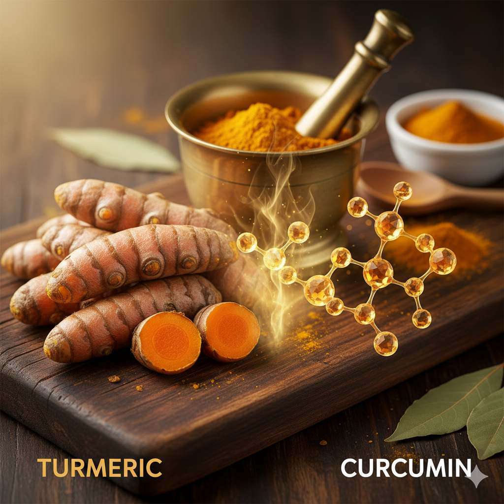

If you're tired of relying on medications with potential side effects to manage your joint discomfort, you're not alone. As a practicing physician for over 15 years, I've seen firsthand how natural approaches can transform lives by addressing the root causes of inflammation rather than just masking symptoms.
1. Embrace Anti-Inflammatory Foods

What you eat directly impacts inflammation levels throughout your body. The Mediterranean diet, rich in fruits, vegetables, nuts, whole grains, fish, and healthy fats, has been extensively studied for its anti-inflammatory properties. Specific foods like turmeric, ginger, cherries, and olive oil contain compounds that actively combat inflammation at the cellular level. I often recommend patients start their day with a turmeric-ginger tea and incorporate fatty fish like salmon at least twice weekly.
Research from the Arthritis Foundation shows that people following an anti-inflammatory diet report significant reductions in joint pain and stiffness within just a few weeks. The key is consistency - making these foods a regular part of your eating pattern rather than occasional additions.
2. Omega-3 Fatty Acids
Omega-3 fatty acids, particularly EPA and DHA found in fish oil, are powerful inflammation fighters. These essential fats help produce molecules called resolvins and protectins that actively resolve inflammation in the body. Multiple studies have demonstrated that omega-3 supplementation can reduce joint tenderness and decrease the need for anti-inflammatory medications.
While fatty fish like salmon and mackerel are excellent sources, many people find supplementation more practical. Look for high-quality fish oil supplements with at least 1,000 mg of combined EPA and DHA daily. For vegetarians, algae-based supplements provide a viable alternative.
3. Regular Low-Impact Exercise
It might seem counterintuitive to move painful joints, but appropriate exercise is one of the most effective natural remedies. Movement helps nourish cartilage, strengthen supporting muscles, and maintain joint flexibility. The key is choosing low-impact activities that don't place excessive stress on joints.
Swimming, cycling, yoga, and tai chi are excellent options. A 2023 review in the Journal of Rheumatology found that regular tai practice significantly improved pain, stiffness, and physical function in people with osteoarthritis. Start slowly, listen to your body, and gradually increase duration and intensity.
4. Maintain a Healthy Weight
Every extra pound on your body places approximately four pounds of additional pressure on your knees. Excess weight not only mechanically stresses joints but also promotes systemic inflammation through the release of pro-inflammatory cytokines from fat tissue.
Research shows that losing just 10% of body weight can lead to a 50% reduction in osteoarthritis pain. Focus on sustainable weight loss through balanced nutrition and regular physical activity rather than extreme diets that can deprive your body of essential nutrients.
5. Turmeric and Curcumin
The bright yellow spice turmeric contains curcumin, a compound with potent anti-inflammatory properties that rival some pharmaceutical options without the side effects. Curcumin works by blocking NF-kB, a molecule that activates genes related to inflammation.
To enhance absorption, look for supplements that include piperine (from black pepper) or take turmeric with healthy fats. Clinical trials have shown that curcumin supplements can be as effective as ibuprofen for managing osteoarthritis pain, with the added benefit of protecting joint tissue from further degradation.
6. Heat and Cold Therapy
Simple temperature therapies can provide significant relief when applied correctly. Use heat (warm baths, heating pads) for chronic stiffness and to relax muscles around joints. Cold packs are more effective for acute inflammation and swelling after activity.
I recommend the 15-minute rule: apply either heat or cold for no more than 15 minutes at a time, with at least a 2-hour break between applications. Many of my patients find alternating between heat and cold particularly effective for managing flare-ups.
7. Glucosamine and Chondroitin
These natural compounds are building blocks of cartilage, the cushioning tissue in joints. While research results have been mixed, many studies show that glucosamine and chondroitin supplements can modestly reduce pain and slow joint deterioration in osteoarthritis.
The combination appears most effective for moderate-to-severe pain. It may take several months to notice benefits, so patience and consistency are important. Look for supplements that have been independently verified for quality and potency.
8. Stress Reduction and Quality Sleep
Chronic stress and poor sleep create a vicious cycle with inflammation. Stress hormones like cortisol increase inflammation when levels remain elevated long-term. Meanwhile, pain interferes with sleep, which then reduces pain tolerance.
Mindfulness practices, deep breathing exercises, and establishing a consistent sleep routine can significantly impact joint health. Research shows that just 10 minutes of daily meditation can reduce inflammatory markers. Aim for 7-9 hours of quality sleep nightly in a dark, cool, quiet environment.
Frequently Asked Questions
How long does it typically take to see results from these natural approaches?
- Sarah J., 54, Ohio
Most people begin noticing improvements within 2-4 weeks of consistent implementation, but maximum benefits typically occur after 2-3 months. Dietary changes and supplements need time to alter inflammatory pathways in your body. Exercise benefits may be noticed more quickly as stronger muscles better support joints. The key is consistency - these approaches work cumulatively over time.
Are these remedies safe to use alongside prescription medications?
- Michael T., 61, Florida
Most natural approaches are generally safe, but it's crucial to discuss any new supplements with your healthcare provider, especially if you take blood thinners or have underlying health conditions. For instance, high doses of omega-3s may interact with anticoagulants, and turmeric can potentially affect diabetes medications. The lifestyle approaches like diet, exercise, and stress reduction are typically safe for everyone.
Which of these approaches would you recommend starting with?
- Jennifer L., 48, Texas
I typically recommend beginning with dietary changes and gentle movement, as these provide the foundation for joint health. Start by incorporating more anti-inflammatory foods and reducing processed foods and sugars. Simultaneously, establish a consistent routine of low-impact exercise like walking or swimming. Once these habits are established, you can consider adding specific supplements based on your individual needs and response.